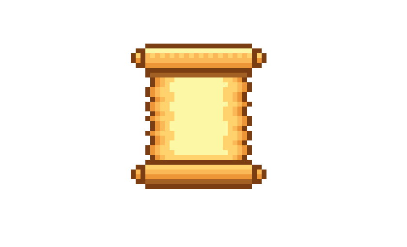

W dzień Walentego pomyślałem, by napisać Ci coś skromnego, lecz w pełni wymownego, takiego prosto z serca mego. Przekaz jest prosty, kocham Cię kochanie, ale jak to napisać... to nie lada wyzwanie. Wszak wpierw zmieńmy format, niech wiersz prozą się stanie. Jesteś dla mnie jak słońce dla księżyca, ja bez Ciebie w czeluściach ciemności zanikam. Kocham Cię tak mocno, że choć wiem, iż to szybko się nie stanie, to codzień myślę nad wspólnym zamieszkaniem, bo moje serce jest Tobie oddane. Wiem, że ten tekst do najlepszych się nie dostanie, lecz chce powtórzyć Ci jedno zdanie - kocham Cię, moje kochanie! Dla Olivii od jej debila (Wojtka)